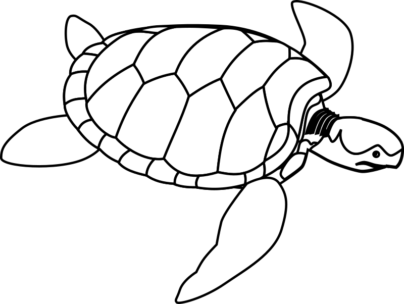

Thanks to core learning, I've learnt three main things. First, I've learned that I need to work on my communication skills, specifically, making sure I don't over explain things, and give the other person time to listen and digest what I'm communicating. Another thing I have learned is that my ego sometimes gets in the way when I'm coding, particularly when it comes to seeking an alternative solution. I have noticed that I can get too entrenched in a particular way of solving something, so I hold back from trying other possibilities. Finally, I have learned about the growth mindset, and how it can appear differently in different aspects in our life, this has encouraged me to try and develop a growth mindset in more areas of my life.
Values, empathy and self-awareness
